Code
## SEMMA-style multinomial model for UFC [Men's & Women's] fights
## 20% training / 80% testing split
## Includes caret confusion Matrix summary & coefficient visualizations
## Install packages if needed (run once, then comment out)
# install.packages(c("dplyr", "readr", "ggplot2", "nnet",
# "broom", "reshape2", "GGally", "caret"))
library(tidyverse)
## ── Attaching core tidyverse packages ──────────────────────── tidyverse 2.0.0 ──
## ✔ dplyr 1.1.4 ✔ readr 2.1.5
## ✔ forcats 1.0.1 ✔ stringr 1.6.0
## ✔ ggplot2 4.0.0 ✔ tibble 3.3.0
## ✔ lubridate 1.9.4 ✔ tidyr 1.3.1
## ✔ purrr 1.1.0
## ── Conflicts ────────────────────────────────────────── tidyverse_conflicts() ──
## ✖ dplyr::filter() masks stats::filter()
## ✖ dplyr::lag() masks stats::lag()
## ℹ Use the conflicted package (<http://conflicted.r-lib.org/>) to force all conflicts to become errors
library(nnet) # multinom()
library(broom) # tidy()
library(reshape2) # melt, dcast (required for wide-to-long)
##
## Attaching package: 'reshape2'
##
## The following object is masked from 'package:tidyr':
##
## smiths
library(GGally) # ggpairs
library(caret) # confusion Matrix
## Loading required package: lattice
##
## Attaching package: 'caret'
##
## The following object is masked from 'package:purrr':
##
## lift
## ==========================================================
## Automatic ggplot saver with sequential figure numbering
## ==========================================================
.fig_counter <- 0
save_last_plot <- function(name,
folder = "figures",
width = 8,
height = 6,
dpi = 300){
dir.create(folder, showWarnings = FALSE, recursive = TRUE)
.fig_counter <<- .fig_counter + 1
fig_number <- sprintf("Fig%02d", .fig_counter)
file_path <- paste0(
folder, "/",
fig_number, "_",
name,
".png"
)
ggsave(
filename = file_path,
plot = ggplot2::last_plot(),
width = width,
height = height,
dpi = dpi
)
message("Saved: ", file_path)
}
## S — SAMPLE
## 1. Load data (make sure the CSV is in your working directory)
ufc <- read.csv("UFC Complete Dataset.csv", stringsAsFactors = FALSE)
#table(ufc)
#summary(ufc)
dim(ufc)
## [1] 7439 95
## 2. Filter to Women's fights using the gender/Gender column
gender_col <- if ("gender" %in% names(ufc)) "gender" else "Gender"
ufc_women <- ufc %>%
filter(grepl("Women", .data[[gender_col]], ignore.case = TRUE))
dim(ufc_women)
## [1] 733 95
## E — EXPLORE
## Quick summary and distribution of fight methods
print(summary(ufc_women))
## event_name r_fighter b_fighter winner
## Length:733 Length:733 Length:733 Length:733
## Class :character Class :character Class :character Class :character
## Mode :character Mode :character Mode :character Mode :character
##
##
##
##
## weight_class is_title_bout gender method
## Length:733 Min. :0.00000 Length:733 Length:733
## Class :character 1st Qu.:0.00000 Class :character Class :character
## Mode :character Median :0.00000 Mode :character Mode :character
## Mean :0.07503
## 3rd Qu.:0.00000
## Max. :1.00000
##
## finish_round total_rounds time_sec referee
## Min. :1.000 Min. :3.000 Min. : 14.0 Length:733
## 1st Qu.:2.000 1st Qu.:3.000 1st Qu.:222.0 Class :character
## Median :3.000 Median :3.000 Median :300.0 Mode :character
## Mean :2.641 Mean :3.202 Mean :253.5
## 3rd Qu.:3.000 3rd Qu.:3.000 3rd Qu.:300.0
## Max. :5.000 Max. :5.000 Max. :300.0
##
## r_kd r_sig_str r_sig_str_att r_sig_str_acc
## Min. :0.000 Min. : 0.00 Min. : 0.0 Min. :0.0000
## 1st Qu.:0.000 1st Qu.: 23.00 1st Qu.: 51.0 1st Qu.:0.3700
## Median :0.000 Median : 45.00 Median :102.0 Median :0.4600
## Mean :0.105 Mean : 52.03 Mean :116.3 Mean :0.4688
## 3rd Qu.:0.000 3rd Qu.: 72.00 3rd Qu.:162.0 3rd Qu.:0.5600
## Max. :4.000 Max. :225.00 Max. :456.0 Max. :1.0000
##
## r_str r_str_att r_str_acc r_td
## Min. : 0.00 Min. : 0.0 Min. :0.0000 Min. : 0.00
## 1st Qu.: 43.00 1st Qu.: 77.0 1st Qu.:0.4400 1st Qu.: 0.00
## Median : 74.00 Median :143.0 Median :0.5500 Median : 1.00
## Mean : 79.68 Mean :148.4 Mean :0.5534 Mean : 1.16
## 3rd Qu.:107.00 3rd Qu.:207.0 3rd Qu.:0.6600 3rd Qu.: 2.00
## Max. :326.00 Max. :524.0 Max. :1.0000 Max. :10.00
##
## r_td_att r_td_acc r_sub_att r_rev
## Min. : 0.000 Min. :0.0000 Min. :0.0000 Min. :0.0000
## 1st Qu.: 0.000 1st Qu.:0.0000 1st Qu.:0.0000 1st Qu.:0.0000
## Median : 2.000 Median :0.1800 Median :0.0000 Median :0.0000
## Mean : 3.082 Mean :0.3185 Mean :0.4256 Mean :0.1392
## 3rd Qu.: 5.000 3rd Qu.:0.5000 3rd Qu.:1.0000 3rd Qu.:0.0000
## Max. :18.000 Max. :1.0000 Max. :6.0000 Max. :3.0000
##
## r_ctrl_sec r_wins_total r_losses_total r_age
## Min. : 0.0 Min. : 1.00 Min. : 0.000 Min. :22.00
## 1st Qu.: 17.0 1st Qu.: 9.00 1st Qu.: 4.000 1st Qu.:31.00
## Median : 111.0 Median :13.00 Median : 6.000 Median :35.00
## Mean : 181.2 Mean :13.11 Mean : 6.056 Mean :34.32
## 3rd Qu.: 301.0 3rd Qu.:16.00 3rd Qu.: 8.000 3rd Qu.:37.00
## Max. :1110.0 Max. :25.00 Max. :21.000 Max. :46.00
##
## r_height r_weight r_reach r_stance
## Min. :152.4 Min. :52.16 Min. :147.3 Length:733
## 1st Qu.:162.6 1st Qu.:52.16 1st Qu.:162.6 Class :character
## Median :165.1 Median :56.70 Median :167.6 Mode :character
## Mean :165.7 Mean :56.34 Mean :166.9
## 3rd Qu.:170.2 3rd Qu.:61.23 3rd Qu.:172.7
## Max. :182.9 Max. :65.77 Max. :188.0
## NA's :12
## r_SLpM_total r_SApM_total r_sig_str_acc_total r_td_acc_total
## Min. :1.160 Min. :0.45 Min. :0.1900 Min. :0.0000
## 1st Qu.:3.160 1st Qu.:2.98 1st Qu.:0.4000 1st Qu.:0.2700
## Median :3.890 Median :3.87 Median :0.4500 Median :0.4000
## Mean :4.043 Mean :3.89 Mean :0.4479 Mean :0.3873
## 3rd Qu.:4.670 3rd Qu.:4.75 3rd Qu.:0.5000 3rd Qu.:0.5100
## Max. :8.410 Max. :8.43 Max. :0.7100 Max. :1.0000
##
## r_str_def_total r_td_def_total r_sub_avg r_td_avg
## Min. :0.2700 Min. :0.0000 Min. :0.0000 Min. :0.00
## 1st Qu.:0.5100 1st Qu.:0.4700 1st Qu.:0.1000 1st Qu.:0.65
## Median :0.5500 Median :0.5900 Median :0.4000 Median :1.22
## Mean :0.5446 Mean :0.5786 Mean :0.5447 Mean :1.47
## 3rd Qu.:0.5900 3rd Qu.:0.7100 3rd Qu.:0.7000 3rd Qu.:2.02
## Max. :0.8000 Max. :1.0000 Max. :5.4000 Max. :7.50
##
## b_kd b_sig_str b_sig_str_att b_sig_str_acc
## Min. :0.00000 Min. : 0.00 Min. : 0.0 Min. :0.0000
## 1st Qu.:0.00000 1st Qu.: 21.00 1st Qu.: 43.0 1st Qu.:0.3600
## Median :0.00000 Median : 42.00 Median : 97.0 Median :0.4500
## Mean :0.07094 Mean : 47.35 Mean :108.3 Mean :0.4504
## 3rd Qu.:0.00000 3rd Qu.: 68.00 3rd Qu.:158.0 3rd Qu.:0.5400
## Max. :3.00000 Max. :231.00 Max. :403.0 Max. :0.9200
##
## b_str b_str_att b_str_acc b_td
## Min. : 0.00 Min. : 1.0 Min. :0.0000 Min. : 0.0000
## 1st Qu.: 35.00 1st Qu.: 66.0 1st Qu.:0.4200 1st Qu.: 0.0000
## Median : 68.00 Median :132.0 Median :0.5300 Median : 0.0000
## Mean : 70.08 Mean :134.9 Mean :0.5338 Mean : 0.9482
## 3rd Qu.: 97.00 3rd Qu.:192.0 3rd Qu.:0.6400 3rd Qu.: 1.0000
## Max. :242.00 Max. :433.0 Max. :1.0000 Max. :10.0000
##
## b_td_att b_td_acc b_sub_att b_rev
## Min. : 0.000 Min. :0.0000 Min. :0.0000 Min. :0.0000
## 1st Qu.: 0.000 1st Qu.:0.0000 1st Qu.:0.0000 1st Qu.:0.0000
## Median : 1.000 Median :0.0000 Median :0.0000 Median :0.0000
## Mean : 2.476 Mean :0.2857 Mean :0.2892 Mean :0.1528
## 3rd Qu.: 4.000 3rd Qu.:0.5000 3rd Qu.:0.0000 3rd Qu.:0.0000
## Max. :19.000 Max. :1.0000 Max. :6.0000 Max. :3.0000
##
## b_ctrl_sec b_wins_total b_losses_total b_age b_height
## Min. : 0.0 Min. : 1.00 Min. : 0.000 Min. :22 Min. :152.4
## 1st Qu.: 16.0 1st Qu.: 9.00 1st Qu.: 3.000 1st Qu.:31 1st Qu.:162.6
## Median : 78.0 Median :11.00 Median : 6.000 Median :34 Median :165.1
## Mean :141.2 Mean :11.93 Mean : 5.937 Mean :34 Mean :165.4
## 3rd Qu.:212.0 3rd Qu.:15.00 3rd Qu.: 8.000 3rd Qu.:37 3rd Qu.:170.2
## Max. :806.0 Max. :25.00 Max. :21.000 Max. :46 Max. :185.4
##
## b_weight b_reach b_stance b_SLpM_total
## Min. :52.16 Min. :147.3 Length:733 Min. :0.000
## 1st Qu.:52.16 1st Qu.:162.6 Class :character 1st Qu.:3.010
## Median :56.70 Median :167.6 Mode :character Median :3.890
## Mean :56.23 Mean :166.8 Mean :3.928
## 3rd Qu.:61.23 3rd Qu.:172.7 3rd Qu.:4.630
## Max. :65.77 Max. :188.0 Max. :8.410
## NA's :29
## b_SApM_total b_sig_str_acc_total b_td_acc_total b_str_def_total
## Min. :1.180 Min. :0.0000 Min. :0.0000 Min. :0.2800
## 1st Qu.:3.190 1st Qu.:0.4000 1st Qu.:0.2600 1st Qu.:0.5000
## Median :3.950 Median :0.4500 Median :0.3700 Median :0.5500
## Mean :4.073 Mean :0.4418 Mean :0.3764 Mean :0.5418
## 3rd Qu.:4.890 3rd Qu.:0.4900 3rd Qu.:0.5000 3rd Qu.:0.5800
## Max. :8.430 Max. :0.6300 Max. :1.0000 Max. :0.8200
##
## b_td_def_total b_sub_avg b_td_avg kd_diff
## Min. :0.0000 Min. :0.0000 Min. :0.000 Min. :-3.00000
## 1st Qu.:0.5000 1st Qu.:0.1000 1st Qu.:0.520 1st Qu.: 0.00000
## Median :0.6400 Median :0.3000 Median :0.950 Median : 0.00000
## Mean :0.5971 Mean :0.4302 Mean :1.246 Mean : 0.03411
## 3rd Qu.:0.7300 3rd Qu.:0.7000 3rd Qu.:1.830 3rd Qu.: 0.00000
## Max. :1.0000 Max. :4.8000 Max. :6.440 Max. : 4.00000
##
## sig_str_diff sig_str_att_diff sig_str_acc_diff str_diff
## Min. :-131.000 Min. :-188.000 Min. :-0.85000 Min. :-195.000
## 1st Qu.: -13.000 1st Qu.: -20.000 1st Qu.:-0.11000 1st Qu.: -19.000
## Median : 4.000 Median : 6.000 Median : 0.02000 Median : 6.000
## Mean : 4.679 Mean : 7.978 Mean : 0.01843 Mean : 9.606
## 3rd Qu.: 21.000 3rd Qu.: 34.000 3rd Qu.: 0.13000 3rd Qu.: 35.000
## Max. : 142.000 Max. : 180.000 Max. : 0.80000 Max. : 300.000
##
## str_att_diff str_acc_diff td_diff td_att_diff
## Min. :-259.00 Min. :-0.88000 Min. :-10.0000 Min. :-15.0000
## 1st Qu.: -26.00 1st Qu.:-0.09000 1st Qu.: -1.0000 1st Qu.: -2.0000
## Median : 10.00 Median : 0.02000 Median : 0.0000 Median : 0.0000
## Mean : 13.59 Mean : 0.01954 Mean : 0.2115 Mean : 0.6057
## 3rd Qu.: 57.00 3rd Qu.: 0.12000 3rd Qu.: 1.0000 3rd Qu.: 3.0000
## Max. : 346.00 Max. : 0.89000 Max. : 8.0000 Max. : 18.0000
##
## td_acc_diff sub_att_diff rev_diff ctrl_sec_diff
## Min. :-1.0000 Min. :-6.0000 Min. :-2.00000 Min. :-806.00
## 1st Qu.:-0.3300 1st Qu.: 0.0000 1st Qu.: 0.00000 1st Qu.:-106.00
## Median : 0.0000 Median : 0.0000 Median : 0.00000 Median : 9.00
## Mean : 0.0328 Mean : 0.1364 Mean :-0.01364 Mean : 40.02
## 3rd Qu.: 0.4600 3rd Qu.: 0.0000 3rd Qu.: 0.00000 3rd Qu.: 195.00
## Max. : 1.0000 Max. : 6.0000 Max. : 3.00000 Max. :1011.00
##
## wins_total_diff losses_total_diff age_diff height_diff
## Min. :-20.000 Min. :-18.0000 Min. :-15.0000 Min. :-15.2400
## 1st Qu.: -3.000 1st Qu.: -3.0000 1st Qu.: -3.0000 1st Qu.: -2.5400
## Median : 1.000 Median : 0.0000 Median : 0.0000 Median : 0.0000
## Mean : 1.177 Mean : 0.1187 Mean : 0.3206 Mean : 0.2668
## 3rd Qu.: 5.000 3rd Qu.: 3.0000 3rd Qu.: 4.0000 3rd Qu.: 5.0800
## Max. : 19.000 Max. : 19.0000 Max. : 17.0000 Max. : 20.3200
##
## weight_diff reach_diff SLpM_total_diff SApM_total_diff
## Min. :-9.0700 Min. :-25.40000 Min. :-5.0700 Min. :-4.920
## 1st Qu.: 0.0000 1st Qu.: -5.08000 1st Qu.:-1.0200 1st Qu.:-1.280
## Median : 0.0000 Median : 0.00000 Median : 0.1100 Median :-0.140
## Mean : 0.1113 Mean : 0.04405 Mean : 0.1154 Mean :-0.183
## 3rd Qu.: 0.0000 3rd Qu.: 5.08000 3rd Qu.: 1.3300 3rd Qu.: 0.980
## Max. : 9.0700 Max. : 25.40000 Max. : 6.1200 Max. : 5.070
## NA's :41
## sig_str_acc_total_diff td_acc_total_diff str_def_total_diff
## Min. :-0.270000 Min. :-0.8500 Min. :-0.340000
## 1st Qu.:-0.060000 1st Qu.:-0.1600 1st Qu.:-0.060000
## Median : 0.000000 Median : 0.0100 Median : 0.000000
## Mean : 0.006126 Mean : 0.0109 Mean : 0.002824
## 3rd Qu.: 0.070000 3rd Qu.: 0.1700 3rd Qu.: 0.060000
## Max. : 0.400000 Max. : 0.7900 Max. : 0.430000
##
## td_def_total_diff sub_avg_diff td_avg_diff
## Min. :-0.78000 Min. :-4.1000 Min. :-6.440
## 1st Qu.:-0.19000 1st Qu.:-0.3000 1st Qu.:-0.640
## Median :-0.03000 Median : 0.0000 Median : 0.110
## Mean :-0.01857 Mean : 0.1146 Mean : 0.224
## 3rd Qu.: 0.15000 3rd Qu.: 0.4000 3rd Qu.: 1.030
## Max. : 0.84000 Max. : 5.4000 Max. : 5.960
##
print(table(ufc_women$method))
##
## Decision - Majority Decision - Split Decision - Unanimous
## 5 97 355
## DQ KO/TKO Submission
## 1 126 143
## TKO - Doctor's Stoppage
## 6
## 3. Combined distribution plot (Faceted by Gender)
## We filter the original dataset to include both groups for comparison
ufc_eda <- ufc %>%
filter(grepl("Men|Women", .data[[gender_col]], ignore.case = TRUE)) %>%
mutate(gender_label = ifelse(grepl("Women", .data[[gender_col]], ignore.case = TRUE), "Women", "Men"))
ggplot(ufc_eda, aes(x = method)) +
geom_bar() +
facet_wrap(~ gender_label, scales = "free_y") +
theme_minimal() +
theme(axis.text.x = element_text(angle = 45, hjust = 1)) +
labs(
title = "Distribution of Fight Methods by Gender",
x = "Method",
y = "Count"
)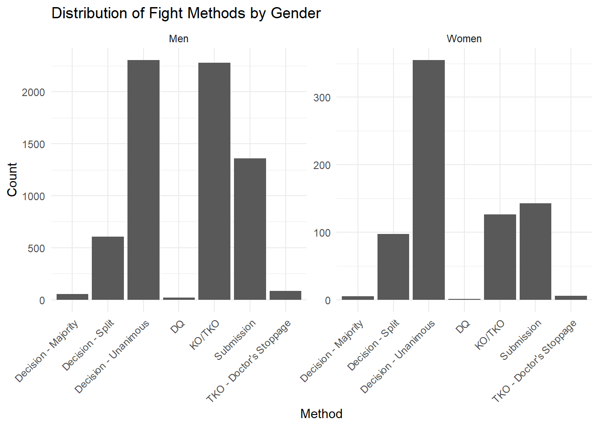
Code
save_last_plot("combined_method_distribution")
## Saved: figures/Fig01_combined_method_distribution.png
## M — MODIFY
## 1. Create winner-based variables (collapse red/blue stats into winner_* variables)
women_winner_stats <- ufc_women %>%
mutate(
winner_kd = ifelse(winner == "Red", r_kd, b_kd),
winner_str_acc = ifelse(winner == "Red", r_str_acc, b_str_acc),
winner_sub_att = ifelse(winner == "Red", r_sub_att, b_sub_att),
winner_td_acc = ifelse(winner == "Red", r_td_acc, b_td_acc),
winner_ctrl_sec = ifelse(winner == "Red", r_ctrl_sec, b_ctrl_sec),
winner_height = ifelse(winner == "Red", r_height, b_height),
winner_reach = ifelse(winner == "Red", r_reach, b_reach),
method = as.factor(method)
) %>%
select(
method,
winner_kd,
winner_str_acc,
winner_sub_att,
winner_td_acc,
winner_ctrl_sec,
winner_height,
winner_reach
)
## Inspect the resulting winner-centric dataset
print(head(women_winner_stats))
## method winner_kd winner_str_acc winner_sub_att winner_td_acc
## 1 Decision - Unanimous 0 0.60 0 0.33
## 2 Decision - Unanimous 0 0.43 0 0.00
## 3 Submission 0 0.45 1 1.00
## 4 Decision - Unanimous 0 0.57 0 1.00
## 5 Submission 0 0.60 4 0.00
## 6 Decision - Unanimous 0 0.65 0 1.00
## winner_ctrl_sec winner_height winner_reach
## 1 419 165.10 165.10
## 2 1 175.26 172.72
## 3 148 180.34 182.88
## 4 422 172.72 172.72
## 5 0 160.02 172.72
## 6 285 165.10 165.10
print(summary(women_winner_stats))
## method winner_kd winner_str_acc
## Decision - Majority : 5 Min. :0.0000 Min. :0.0000
## Decision - Split : 97 1st Qu.:0.0000 1st Qu.:0.4800
## Decision - Unanimous :355 Median :0.0000 Median :0.5900
## DQ : 1 Mean :0.1501 Mean :0.5833
## KO/TKO :126 3rd Qu.:0.0000 3rd Qu.:0.6900
## Submission :143 Max. :4.0000 Max. :1.0000
## TKO - Doctor's Stoppage: 6
## winner_sub_att winner_td_acc winner_ctrl_sec winner_height
## Min. :0.0000 Min. :0.0000 Min. : 0.0 Min. :152.4
## 1st Qu.:0.0000 1st Qu.:0.0000 1st Qu.: 43.0 1st Qu.:162.6
## Median :0.0000 Median :0.3500 Median : 155.0 Median :165.1
## Mean :0.5389 Mean :0.4044 Mean : 214.3 Mean :165.6
## 3rd Qu.:1.0000 3rd Qu.:0.7500 3rd Qu.: 345.0 3rd Qu.:170.2
## Max. :6.0000 Max. :1.0000 Max. :1110.0 Max. :182.9
##
## winner_reach
## Min. :147.3
## 1st Qu.:162.6
## Median :167.6
## Mean :166.8
## 3rd Qu.:172.7
## Max. :188.0
## NA's :1
summary(women_winner_stats)
## method winner_kd winner_str_acc
## Decision - Majority : 5 Min. :0.0000 Min. :0.0000
## Decision - Split : 97 1st Qu.:0.0000 1st Qu.:0.4800
## Decision - Unanimous :355 Median :0.0000 Median :0.5900
## DQ : 1 Mean :0.1501 Mean :0.5833
## KO/TKO :126 3rd Qu.:0.0000 3rd Qu.:0.6900
## Submission :143 Max. :4.0000 Max. :1.0000
## TKO - Doctor's Stoppage: 6
## winner_sub_att winner_td_acc winner_ctrl_sec winner_height
## Min. :0.0000 Min. :0.0000 Min. : 0.0 Min. :152.4
## 1st Qu.:0.0000 1st Qu.:0.0000 1st Qu.: 43.0 1st Qu.:162.6
## Median :0.0000 Median :0.3500 Median : 155.0 Median :165.1
## Mean :0.5389 Mean :0.4044 Mean : 214.3 Mean :165.6
## 3rd Qu.:1.0000 3rd Qu.:0.7500 3rd Qu.: 345.0 3rd Qu.:170.2
## Max. :6.0000 Max. :1.0000 Max. :1110.0 Max. :182.9
##
## winner_reach
## Min. :147.3
## 1st Qu.:162.6
## Median :167.6
## Mean :166.8
## 3rd Qu.:172.7
## Max. :188.0
## NA's :1
## Optional: quick ggpairs (without color)
ggpairs(women_winner_stats)
## `stat_bin()` using `bins = 30`. Pick better value `binwidth`.
## `stat_bin()` using `bins = 30`. Pick better value `binwidth`.
## `stat_bin()` using `bins = 30`. Pick better value `binwidth`.
## `stat_bin()` using `bins = 30`. Pick better value `binwidth`.
## `stat_bin()` using `bins = 30`. Pick better value `binwidth`.
## `stat_bin()` using `bins = 30`. Pick better value `binwidth`.
## `stat_bin()` using `bins = 30`. Pick better value `binwidth`.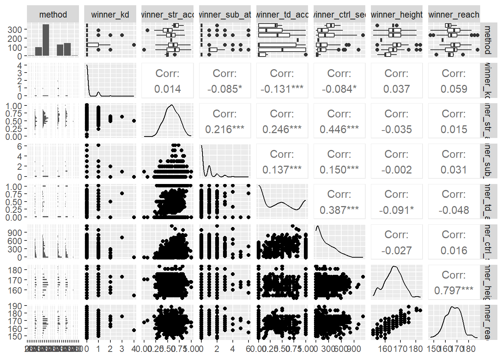
Code
## 2. Train/test split: 20% training, 80% testing
set.seed(123) # for reproducibility
n <- nrow(women_winner_stats)
train_idx <- sample(1:n, size = 0.8 * n) # 80% train
train <- women_winner_stats[train_idx, ]
test <- women_winner_stats[-train_idx, ]
cat("Training rows:", nrow(train), "\n")
## Training rows: 586
cat("Testing rows:", nrow(test), "\n")
## Testing rows: 147
## M — MODEL (Multinomial logistic regression)
multi_model <- multinom(
method ~ winner_kd +
winner_str_acc +
winner_sub_att +
winner_td_acc +
winner_ctrl_sec +
winner_height +
winner_reach,
data = train
)
## # weights: 63 (48 variable)
## initial value 1138.357437
## iter 10 value 791.816043
## iter 20 value 691.360916
## iter 30 value 601.141418
## iter 40 value 590.941971
## iter 50 value 588.665045
## iter 60 value 588.159074
## iter 70 value 587.941281
## iter 80 value 587.676662
## iter 90 value 587.578259
## iter 100 value 587.537776
## final value 587.537776
## stopped after 100 iterations
## Model summary
print(summary(multi_model))
## Call:
## multinom(formula = method ~ winner_kd + winner_str_acc + winner_sub_att +
## winner_td_acc + winner_ctrl_sec + winner_height + winner_reach,
## data = train)
##
## Coefficients:
## (Intercept) winner_kd winner_str_acc winner_sub_att
## Decision - Split -10.810442 9.1968003 -11.429288 -0.05546283
## Decision - Unanimous -10.178406 9.9905084 -8.790440 -0.05521339
## DQ 43.072897 -0.2934672 -2.952837 -10.46524225
## KO/TKO -26.416576 11.5303800 -3.409988 -0.28914968
## Submission -10.086723 10.1895925 -3.825616 1.40340678
## TKO - Doctor's Stoppage -7.203071 -0.8728219 -4.378087 -7.45488378
## winner_td_acc winner_ctrl_sec winner_height
## Decision - Split 5.738603 -0.005949618 0.001388355
## Decision - Unanimous 6.419818 -0.005326686 0.010784047
## DQ 12.051987 -0.023491252 -0.066270102
## KO/TKO 7.206487 -0.009744188 0.048697320
## Submission 7.791795 -0.013907071 0.014759894
## TKO - Doctor's Stoppage 3.820045 -0.020135351 -0.274595485
## winner_reach
## Decision - Split 0.12763754
## Decision - Unanimous 0.11121966
## DQ -0.20341467
## KO/TKO 0.14739474
## Submission 0.08257412
## TKO - Doctor's Stoppage 0.34892939
##
## Std. Errors:
## (Intercept) winner_kd winner_str_acc winner_sub_att
## Decision - Split 0.0446168670 4.056484e-01 0.885446548 6.717131e-01
## Decision - Unanimous 0.0310705029 2.224954e-01 0.588455407 6.475801e-01
## DQ 0.0008828157 2.736016e-07 0.006352148 1.958821e-05
## KO/TKO 0.0415063913 2.233966e-01 0.785422963 6.755776e-01
## Submission 0.0203056561 3.180239e-01 0.790873375 6.644776e-01
## TKO - Doctor's Stoppage 0.0009030024 6.646877e-07 0.004885686 4.453873e-04
## winner_td_acc winner_ctrl_sec winner_height
## Decision - Split 0.319491149 0.002565939 0.1513142
## Decision - Unanimous 0.204851355 0.002452143 0.1488587
## DQ 0.017874368 0.020807052 0.3614652
## KO/TKO 0.265815812 0.002547132 0.1512648
## Submission 0.272928926 0.002645282 0.1519418
## TKO - Doctor's Stoppage 0.002698326 0.009600189 0.1969202
## winner_reach
## Decision - Split 0.1523249
## Decision - Unanimous 0.1498989
## DQ 0.3620816
## KO/TKO 0.1522388
## Submission 0.1529580
## TKO - Doctor's Stoppage 0.1959371
##
## Residual Deviance: 1175.076
## AIC: 1271.076
## Coefficients, z-values, and p-values
coef_mat <- summary(multi_model)$coefficients
se_mat <- summary(multi_model)$standard.errors
z_values <- coef_mat / se_mat
p_values <- 2 * (1 - pnorm(abs(z_values)))
# Check which rows are which methods
levels(train$method)
## [1] "Decision - Majority" "Decision - Split"
## [3] "Decision - Unanimous" "DQ"
## [5] "KO/TKO" "Submission"
## [7] "TKO - Doctor's Stoppage"
rownames(p_values) # should correspond to non-baseline methods
## [1] "Decision - Split" "Decision - Unanimous"
## [3] "DQ" "KO/TKO"
## [5] "Submission" "TKO - Doctor's Stoppage"
# 1) List all (method, predictor) combinations with p < .05
sig_idx <- which(p_values < 0.05, arr.ind = TRUE)
sig_effects <- data.frame(
method = rownames(p_values)[sig_idx[, "row"]],
predictor = colnames(p_values)[sig_idx[, "col"]],
p_value = p_values[sig_idx]
)
sig_effects <- sig_effects[order(sig_effects$predictor, sig_effects$method), ]
sig_effects
## method predictor p_value
## 1 Decision - Split (Intercept) 0.000000e+00
## 2 Decision - Unanimous (Intercept) 0.000000e+00
## 3 DQ (Intercept) 0.000000e+00
## 4 KO/TKO (Intercept) 0.000000e+00
## 5 Submission (Intercept) 0.000000e+00
## 6 TKO - Doctor's Stoppage (Intercept) 0.000000e+00
## 28 Decision - Split winner_ctrl_sec 2.041184e-02
## 29 Decision - Unanimous winner_ctrl_sec 2.983626e-02
## 30 KO/TKO winner_ctrl_sec 1.304789e-04
## 31 Submission winner_ctrl_sec 1.461773e-07
## 32 TKO - Doctor's Stoppage winner_ctrl_sec 3.595896e-02
## 7 Decision - Split winner_kd 0.000000e+00
## 8 Decision - Unanimous winner_kd 0.000000e+00
## 9 DQ winner_kd 0.000000e+00
## 10 KO/TKO winner_kd 0.000000e+00
## 11 Submission winner_kd 0.000000e+00
## 12 TKO - Doctor's Stoppage winner_kd 0.000000e+00
## 13 Decision - Split winner_str_acc 0.000000e+00
## 14 Decision - Unanimous winner_str_acc 0.000000e+00
## 15 DQ winner_str_acc 0.000000e+00
## 16 KO/TKO winner_str_acc 1.414521e-05
## 17 Submission winner_str_acc 1.316777e-06
## 18 TKO - Doctor's Stoppage winner_str_acc 0.000000e+00
## 19 DQ winner_sub_att 0.000000e+00
## 20 Submission winner_sub_att 3.468256e-02
## 21 TKO - Doctor's Stoppage winner_sub_att 0.000000e+00
## 22 Decision - Split winner_td_acc 0.000000e+00
## 23 Decision - Unanimous winner_td_acc 0.000000e+00
## 24 DQ winner_td_acc 0.000000e+00
## 25 KO/TKO winner_td_acc 0.000000e+00
## 26 Submission winner_td_acc 0.000000e+00
## 27 TKO - Doctor's Stoppage winner_td_acc 0.000000e+00
cat("\nZ-values:\n")
##
## Z-values:
print(z_values)
## (Intercept) winner_kd winner_str_acc winner_sub_att
## Decision - Split -242.2950 2.267185e+01 -12.907937 -8.256922e-02
## Decision - Unanimous -327.5906 4.490209e+01 -14.938159 -8.526110e-02
## DQ 48790.3613 -1.072608e+06 -464.856471 -5.342622e+05
## KO/TKO -636.4460 5.161394e+01 -4.341595 -4.280037e-01
## Submission -496.7445 3.204034e+01 -4.837205 2.112045e+00
## TKO - Doctor's Stoppage -7976.8021 -1.313131e+06 -896.104892 -1.673798e+04
## winner_td_acc winner_ctrl_sec winner_height
## Decision - Split 17.96170 -2.318690 0.009175313
## Decision - Unanimous 31.33891 -2.172257 0.072444846
## DQ 674.26085 -1.129004 -0.183337437
## KO/TKO 27.11083 -3.825553 0.321934315
## Submission 28.54881 -5.257311 0.097141788
## TKO - Doctor's Stoppage 1415.70926 -2.097391 -1.394450649
## winner_reach
## Decision - Split 0.8379294
## Decision - Unanimous 0.7419647
## DQ -0.5617924
## KO/TKO 0.9681812
## Submission 0.5398483
## TKO - Doctor's Stoppage 1.7808233
cat("\nP-values:\n")
##
## P-values:
print(p_values)
## (Intercept) winner_kd winner_str_acc winner_sub_att
## Decision - Split 0 0 0.000000e+00 0.93419408
## Decision - Unanimous 0 0 0.000000e+00 0.93205382
## DQ 0 0 0.000000e+00 0.00000000
## KO/TKO 0 0 1.414521e-05 0.66864845
## Submission 0 0 1.316777e-06 0.03468256
## TKO - Doctor's Stoppage 0 0 0.000000e+00 0.00000000
## winner_td_acc winner_ctrl_sec winner_height
## Decision - Split 0 2.041184e-02 0.9926793
## Decision - Unanimous 0 2.983626e-02 0.9422479
## DQ 0 2.588960e-01 0.8545333
## KO/TKO 0 1.304789e-04 0.7475025
## Submission 0 1.461773e-07 0.9226138
## TKO - Doctor's Stoppage 0 3.595896e-02 0.1631816
## winner_reach
## Decision - Split 0.40207036
## Decision - Unanimous 0.45810870
## DQ 0.57425746
## KO/TKO 0.33295391
## Submission 0.58930168
## TKO - Doctor's Stoppage 0.07494132
## A — ASSESS
## Predictions on test set
pred_test <- predict(multi_model, newdata = test, type = "class")
## FIX: ensure factor levels of predictions match the actuals
pred_test <- factor(pred_test, levels = levels(test$method))
## Confusion matrix (raw table)
conf_mat <- table(Predicted = pred_test, Actual = test$method)
cat("\nConfusion matrix (Test set):\n")
##
## Confusion matrix (Test set):
print(conf_mat)
## Actual
## Predicted Decision - Majority Decision - Split
## Decision - Majority 0 0
## Decision - Split 0 0
## Decision - Unanimous 1 19
## DQ 0 0
## KO/TKO 0 0
## Submission 0 0
## TKO - Doctor's Stoppage 0 0
## Actual
## Predicted Decision - Unanimous DQ KO/TKO Submission
## Decision - Majority 1 0 0 0
## Decision - Split 0 0 0 1
## Decision - Unanimous 61 0 13 14
## DQ 0 0 0 0
## KO/TKO 4 0 9 2
## Submission 2 0 1 17
## TKO - Doctor's Stoppage 0 0 0 0
## Actual
## Predicted TKO - Doctor's Stoppage
## Decision - Majority 0
## Decision - Split 0
## Decision - Unanimous 1
## DQ 1
## KO/TKO 0
## Submission 0
## TKO - Doctor's Stoppage 0
## Accuracy (direct comparison)
accuracy <- mean(pred_test == test$method, na.rm = TRUE)
cat("\nAccuracy on test set (direct):", accuracy, "\n")
##
## Accuracy on test set (direct): 0.5918367
## Accuracy from confusion matrix
accuracy_from_confmat <- sum(diag(conf_mat)) / sum(conf_mat)
cat("Accuracy from confusion matrix:", accuracy_from_confmat, "\n")
## Accuracy from confusion matrix: 0.5918367
cat("Difference:", accuracy - accuracy_from_confmat, "\n")
## Difference: 0
## caret confusionMatrix summary
cm <- confusionMatrix(
data = pred_test, # predictions
reference = test$method # true labels
)
cat("\n=== caret::confusionMatrix Summary ===\n")
##
## === caret::confusionMatrix Summary ===
print(cm)
## Confusion Matrix and Statistics
##
## Reference
## Prediction Decision - Majority Decision - Split
## Decision - Majority 0 0
## Decision - Split 0 0
## Decision - Unanimous 1 19
## DQ 0 0
## KO/TKO 0 0
## Submission 0 0
## TKO - Doctor's Stoppage 0 0
## Reference
## Prediction Decision - Unanimous DQ KO/TKO Submission
## Decision - Majority 1 0 0 0
## Decision - Split 0 0 0 1
## Decision - Unanimous 61 0 13 14
## DQ 0 0 0 0
## KO/TKO 4 0 9 2
## Submission 2 0 1 17
## TKO - Doctor's Stoppage 0 0 0 0
## Reference
## Prediction TKO - Doctor's Stoppage
## Decision - Majority 0
## Decision - Split 0
## Decision - Unanimous 1
## DQ 1
## KO/TKO 0
## Submission 0
## TKO - Doctor's Stoppage 0
##
## Overall Statistics
##
## Accuracy : 0.5918
## 95% CI : (0.5078, 0.6721)
## No Information Rate : 0.4626
## P-Value [Acc > NIR] : 0.001116
##
## Kappa : 0.3294
##
## Mcnemar's Test P-Value : NA
##
## Statistics by Class:
##
## Class: Decision - Majority Class: Decision - Split
## Sensitivity 0.000000 0.000000
## Specificity 0.993151 0.992188
## Pos Pred Value 0.000000 0.000000
## Neg Pred Value 0.993151 0.869863
## Prevalence 0.006803 0.129252
## Detection Rate 0.000000 0.000000
## Detection Prevalence 0.006803 0.006803
## Balanced Accuracy 0.496575 0.496094
## Class: Decision - Unanimous Class: DQ Class: KO/TKO
## Sensitivity 0.8971 NA 0.39130
## Specificity 0.3924 0.993197 0.95161
## Pos Pred Value 0.5596 NA 0.60000
## Neg Pred Value 0.8158 NA 0.89394
## Prevalence 0.4626 0.000000 0.15646
## Detection Rate 0.4150 0.000000 0.06122
## Detection Prevalence 0.7415 0.006803 0.10204
## Balanced Accuracy 0.6447 NA 0.67146
## Class: Submission Class: TKO - Doctor's Stoppage
## Sensitivity 0.5000 0.00000
## Specificity 0.9735 1.00000
## Pos Pred Value 0.8500 NaN
## Neg Pred Value 0.8661 0.98639
## Prevalence 0.2313 0.01361
## Detection Rate 0.1156 0.00000
## Detection Prevalence 0.1361 0.00000
## Balanced Accuracy 0.7367 0.50000
## Overall stats (Accuracy, Kappa, etc.)
cm$overall
## Accuracy Kappa AccuracyLower AccuracyUpper AccuracyNull
## 0.591836735 0.329379562 0.507798491 0.672096274 0.462585034
## AccuracyPValue McnemarPValue
## 0.001115703 NaN
## Per-class stats (Sensitivity, Specificity, Precision, F1, etc.)
cm_byclass_df <- as.data.frame(cm$byClass)
cm_byclass_df # nice per-class table
## Sensitivity Specificity Pos Pred Value
## Class: Decision - Majority 0.0000000 0.9931507 0.000000
## Class: Decision - Split 0.0000000 0.9921875 0.000000
## Class: Decision - Unanimous 0.8970588 0.3924051 0.559633
## Class: DQ NA 0.9931973 NA
## Class: KO/TKO 0.3913043 0.9516129 0.600000
## Class: Submission 0.5000000 0.9734513 0.850000
## Class: TKO - Doctor's Stoppage 0.0000000 1.0000000 NaN
## Neg Pred Value Precision Recall F1
## Class: Decision - Majority 0.9931507 0.000000 0.0000000 NaN
## Class: Decision - Split 0.8698630 0.000000 0.0000000 NaN
## Class: Decision - Unanimous 0.8157895 0.559633 0.8970588 0.6892655
## Class: DQ NA 0.000000 NA NA
## Class: KO/TKO 0.8939394 0.600000 0.3913043 0.4736842
## Class: Submission 0.8661417 0.850000 0.5000000 0.6296296
## Class: TKO - Doctor's Stoppage 0.9863946 NA 0.0000000 NA
## Prevalence Detection Rate Detection Prevalence
## Class: Decision - Majority 0.006802721 0.00000000 0.006802721
## Class: Decision - Split 0.129251701 0.00000000 0.006802721
## Class: Decision - Unanimous 0.462585034 0.41496599 0.741496599
## Class: DQ 0.000000000 0.00000000 0.006802721
## Class: KO/TKO 0.156462585 0.06122449 0.102040816
## Class: Submission 0.231292517 0.11564626 0.136054422
## Class: TKO - Doctor's Stoppage 0.013605442 0.00000000 0.000000000
## Balanced Accuracy
## Class: Decision - Majority 0.4965753
## Class: Decision - Split 0.4960938
## Class: Decision - Unanimous 0.6447319
## Class: DQ NA
## Class: KO/TKO 0.6714586
## Class: Submission 0.7367257
## Class: TKO - Doctor's Stoppage 0.5000000
## McFadden R2 (manual)
null_model <- multinom(method ~ 1, data = train, trace = FALSE)
LL_full <- as.numeric(logLik(multi_model))
LL_null <- as.numeric(logLik(null_model))
McFadden_R2 <- 1 - (LL_full / LL_null)
cat("\nMcFadden R2:", McFadden_R2, "\n")
##
## McFadden R2: 0.2378017
## Optional: visual comparison of predicted vs actual
comparison_df <- data.frame(
actual = test$method,
predicted = pred_test
)
ggplot(comparison_df, aes(x = actual, fill = predicted)) +
geom_bar(position = "dodge") +
theme_minimal() +
labs(
title = "Predicted vs Actual Methods (Test Set) - Women",
x = "Actual Fight Outcome",
y = "Predicted Fight Outcome",
fill = "Predicted"
)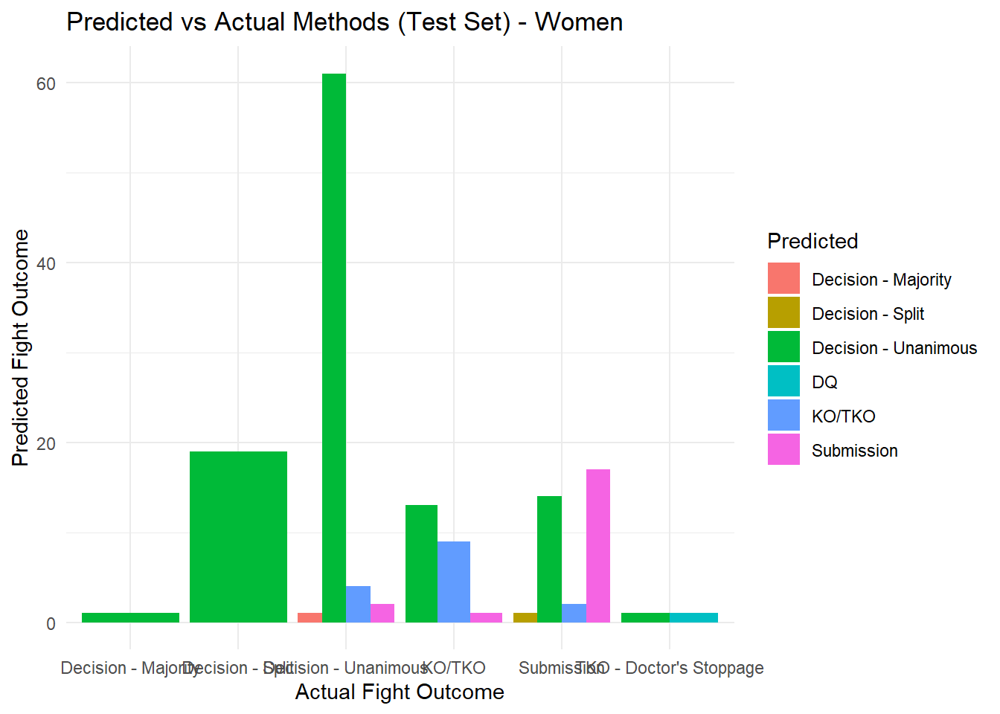
Code
save_last_plot("women_predicted_vs_actual")
## Saved: figures/Fig02_women_predicted_vs_actual.png
## Coefficient plot
coef_df <- tidy(multi_model) %>%
filter(term != "(Intercept)")
coef_df <- coef_df %>%
mutate(
term_pretty = recode(
term,
winner_kd = "Knockdowns",
winner_str_acc = "Striking Accuracy",
winner_sub_att = "Submission Attempts",
winner_td_acc = "Takedown Accuracy",
winner_ctrl_sec = "Control Time (sec)",
winner_height = "Height",
winner_reach = "Reach",
.default = term
)
)
ggplot(coef_df, aes(x = term_pretty, y = estimate, fill = y.level)) +
geom_col(position = "dodge") +
coord_flip() +
labs(
title = "Coefficient Estimates by Win Condition - Women",
x = "Predictor",
y = "Log-odds Coefficient",
fill = "Win Condition"
) +
theme_minimal()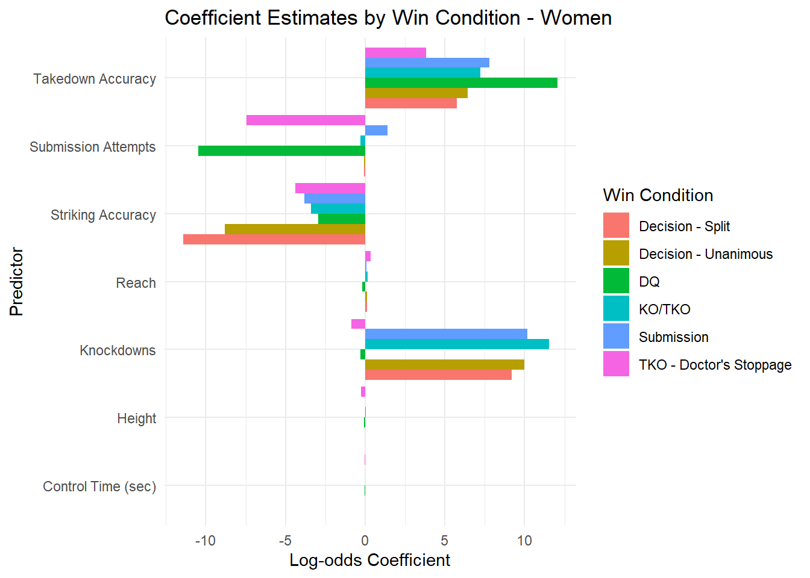
Code
save_last_plot("women_coefficients")
## Saved: figures/Fig03_women_coefficients.png
## Coefficient heatmap
heat_df_long <- coef_df %>%
select(y.level, term_pretty, estimate)
heat_df_wide <- dcast(heat_df_long, term_pretty ~ y.level, value.var = "estimate")
heat_df_melt <- melt(
heat_df_wide,
id.vars = "term_pretty",
variable.name = "win_condition",
value.name = "coef"
)
ggplot(heat_df_melt, aes(x = win_condition, y = term_pretty, fill = coef)) +
geom_tile() +
scale_fill_gradient2(
low = "blue",
mid = "white",
high = "red",
midpoint = 0
) +
labs(
title = "Predictor Importance Heatmap (Coefficients) - Women",
x = "Win Condition",
y = "Predictor",
fill = "Coef"
) +
theme_minimal() +
theme(axis.text.x = element_text(angle = 45, hjust = 1))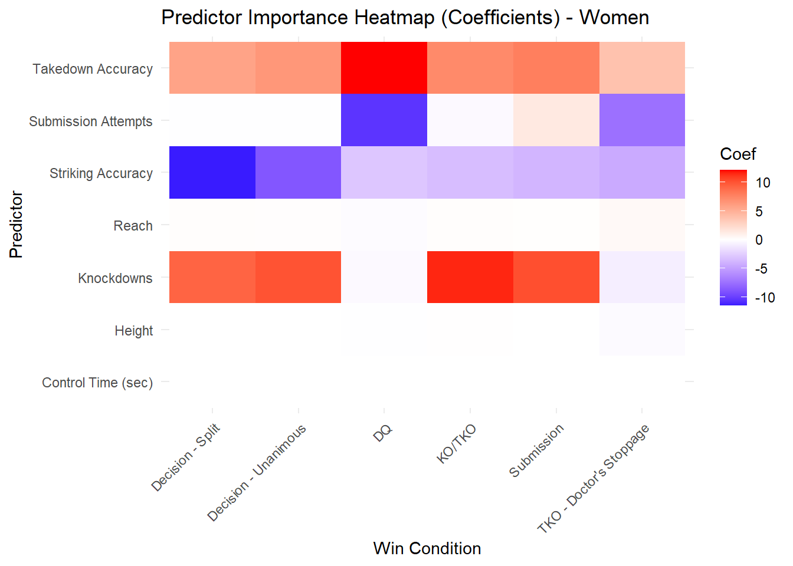
Code
save_last_plot("women_heatmap")
## Saved: figures/Fig04_women_heatmap.png
#Men's Section
## ==========================================================
## SEMMA-style multinomial model for UFC Men's fights
## S — SAMPLE
## 1. Load data (make sure the CSV is in your working directory)
ufc <- read.csv("UFC Complete Dataset.csv", stringsAsFactors = FALSE)
#table(ufc)
#summary(ufc)
dim(ufc)
## [1] 7439 95
## S — SAMPLE
## Filter to Men's fights
ufc_men <- ufc %>%
filter(grepl("Men", .data[[gender_col]], ignore.case = TRUE))
dim(ufc_men)
## [1] 7439 95
## E — EXPLORE
print(summary(ufc_men))
## event_name r_fighter b_fighter winner
## Length:7439 Length:7439 Length:7439 Length:7439
## Class :character Class :character Class :character Class :character
## Mode :character Mode :character Mode :character Mode :character
##
##
##
##
## weight_class is_title_bout gender method
## Length:7439 Min. :0.00000 Length:7439 Length:7439
## Class :character 1st Qu.:0.00000 Class :character Class :character
## Mode :character Median :0.00000 Mode :character Mode :character
## Mean :0.05579
## 3rd Qu.:0.00000
## Max. :1.00000
##
## finish_round total_rounds time_sec referee
## Min. :1.000 Min. :1.000 Min. : 5 Length:7439
## 1st Qu.:1.000 1st Qu.:3.000 1st Qu.: 149 Class :character
## Median :3.000 Median :3.000 Median : 287 Mode :character
## Mean :2.336 Mean :3.129 Mean : 227
## 3rd Qu.:3.000 3rd Qu.:3.000 3rd Qu.: 300
## Max. :5.000 Max. :5.000 Max. :1080
## NA's :31
## r_kd r_sig_str r_sig_str_att r_sig_str_acc
## Min. :0.0000 Min. : 0.00 Min. : 0.00 Min. :0.0000
## 1st Qu.:0.0000 1st Qu.: 14.00 1st Qu.: 29.00 1st Qu.:0.3700
## Median :0.0000 Median : 31.00 Median : 66.00 Median :0.4700
## Mean :0.2492 Mean : 38.36 Mean : 83.79 Mean :0.4753
## 3rd Qu.:0.0000 3rd Qu.: 54.00 3rd Qu.:120.00 3rd Qu.:0.5700
## Max. :5.0000 Max. :445.00 Max. :744.00 Max. :1.0000
##
## r_str r_str_att r_str_acc r_td
## Min. : 0.0 Min. : 0.0 Min. :0.0000 Min. : 0.000
## 1st Qu.: 22.0 1st Qu.: 40.0 1st Qu.:0.4400 1st Qu.: 0.000
## Median : 50.0 Median : 94.0 Median :0.5500 Median : 1.000
## Mean : 58.2 Mean :106.4 Mean :0.5554 Mean : 1.227
## 3rd Qu.: 83.0 3rd Qu.:156.0 3rd Qu.:0.6800 3rd Qu.: 2.000
## Max. :447.0 Max. :746.0 Max. :1.0000 Max. :21.000
##
## r_td_att r_td_acc r_sub_att r_rev
## Min. : 0.000 Min. :0.0000 Min. : 0.0000 Min. :0.0000
## 1st Qu.: 0.000 1st Qu.:0.0000 1st Qu.: 0.0000 1st Qu.:0.0000
## Median : 1.000 Median :0.1100 Median : 0.0000 Median :0.0000
## Mean : 2.941 Mean :0.3111 Mean : 0.4557 Mean :0.1344
## 3rd Qu.: 4.000 3rd Qu.:0.5700 3rd Qu.: 1.0000 3rd Qu.:0.0000
## Max. :27.000 Max. :1.0000 Max. :10.0000 Max. :6.0000
##
## r_ctrl_sec r_wins_total r_losses_total r_age
## Min. : 0.0 Min. : 0.00 Min. : 0.00 Min. :19.00
## 1st Qu.: 7.0 1st Qu.: 13.00 1st Qu.: 5.00 1st Qu.:34.00
## Median : 72.0 Median : 18.00 Median : 7.00 Median :38.00
## Mean : 152.1 Mean : 19.19 Mean : 7.94 Mean :38.32
## 3rd Qu.: 230.0 3rd Qu.: 24.00 3rd Qu.:11.00 3rd Qu.:42.00
## Max. :1342.0 Max. :253.00 Max. :53.00 Max. :65.00
## NA's :76
## r_height r_weight r_reach r_stance
## Min. :152.4 Min. : 52.16 Min. :147.3 Length:7439
## 1st Qu.:172.7 1st Qu.: 65.77 1st Qu.:177.8 Class :character
## Median :177.8 Median : 77.11 Median :182.9 Mode :character
## Mean :178.6 Mean : 76.49 Mean :183.2
## 3rd Qu.:185.4 3rd Qu.: 83.91 3rd Qu.:190.5
## Max. :210.8 Max. :156.49 Max. :213.4
## NA's :412
## r_SLpM_total r_SApM_total r_sig_str_acc_total r_td_acc_total
## Min. : 0.000 Min. : 0.000 Min. :0.0000 Min. :0.0000
## 1st Qu.: 2.570 1st Qu.: 2.510 1st Qu.:0.4000 1st Qu.:0.2900
## Median : 3.330 Median : 3.180 Median :0.4500 Median :0.3900
## Mean : 3.412 Mean : 3.283 Mean :0.4414 Mean :0.3883
## 3rd Qu.: 4.205 3rd Qu.: 3.945 3rd Qu.:0.5000 3rd Qu.:0.5000
## Max. :23.330 Max. :15.480 Max. :0.8300 Max. :1.0000
##
## r_str_def_total r_td_def_total r_sub_avg r_td_avg
## Min. :0.0000 Min. :0.0000 Min. : 0.0000 Min. : 0.000
## 1st Qu.:0.5100 1st Qu.:0.5000 1st Qu.: 0.1000 1st Qu.: 0.620
## Median :0.5600 Median :0.6300 Median : 0.5000 Median : 1.330
## Mean :0.5431 Mean :0.6028 Mean : 0.6452 Mean : 1.598
## 3rd Qu.:0.6000 3rd Qu.:0.7400 3rd Qu.: 0.9000 3rd Qu.: 2.290
## Max. :0.8400 Max. :1.0000 Max. :13.8000 Max. :11.110
##
## b_kd b_sig_str b_sig_str_att b_sig_str_acc
## Min. :0.0000 Min. : 0.0 Min. : 0.00 Min. :0.0000
## 1st Qu.:0.0000 1st Qu.: 10.0 1st Qu.: 24.00 1st Qu.:0.3300
## Median :0.0000 Median : 25.0 Median : 60.00 Median :0.4300
## Mean :0.1813 Mean : 33.5 Mean : 78.22 Mean :0.4298
## 3rd Qu.:0.0000 3rd Qu.: 48.0 3rd Qu.:115.00 3rd Qu.:0.5300
## Max. :4.0000 Max. :241.0 Max. :510.00 Max. :1.0000
##
## b_str b_str_att b_str_acc b_td
## Min. : 0.00 Min. : 0.00 Min. :0.0000 Min. : 0.000
## 1st Qu.: 16.00 1st Qu.: 33.00 1st Qu.:0.4000 1st Qu.: 0.000
## Median : 41.00 Median : 83.00 Median :0.5200 Median : 0.000
## Mean : 49.42 Mean : 96.38 Mean :0.5152 Mean : 0.893
## 3rd Qu.: 72.00 3rd Qu.:143.00 3rd Qu.:0.6400 3rd Qu.: 1.000
## Max. :336.00 Max. :556.00 Max. :1.0000 Max. :12.000
##
## b_td_att b_td_acc b_sub_att b_rev
## Min. : 0.000 Min. :0.0000 Min. :0.0000 Min. :0.0000
## 1st Qu.: 0.000 1st Qu.:0.0000 1st Qu.:0.0000 1st Qu.:0.0000
## Median : 1.000 Median :0.0000 Median :0.0000 Median :0.0000
## Mean : 2.653 Mean :0.2262 Mean :0.3254 Mean :0.1331
## 3rd Qu.: 4.000 3rd Qu.:0.4000 3rd Qu.:0.0000 3rd Qu.:0.0000
## Max. :49.000 Max. :1.0000 Max. :7.0000 Max. :4.0000
##
## b_ctrl_sec b_wins_total b_losses_total b_age
## Min. : 0.0 Min. : 0.00 Min. : 0.000 Min. :21.00
## 1st Qu.: 2.0 1st Qu.: 11.00 1st Qu.: 4.000 1st Qu.:33.00
## Median : 42.0 Median : 16.00 Median : 7.000 Median :37.00
## Mean : 109.2 Mean : 17.17 Mean : 7.399 Mean :37.72
## 3rd Qu.: 159.5 3rd Qu.: 21.00 3rd Qu.:10.000 3rd Qu.:42.00
## Max. :1193.0 Max. :253.00 Max. :53.000 Max. :81.00
## NA's :190
## b_height b_weight b_reach b_stance
## Min. :152.4 Min. : 52.16 Min. :147.3 Length:7439
## 1st Qu.:172.7 1st Qu.: 65.77 1st Qu.:175.3 Class :character
## Median :177.8 Median : 70.31 Median :182.9 Mode :character
## Mean :178.6 Mean : 76.32 Mean :182.8
## 3rd Qu.:185.4 3rd Qu.: 83.91 3rd Qu.:190.5
## Max. :210.8 Max. :349.27 Max. :213.4
## NA's :888
## b_SLpM_total b_SApM_total b_sig_str_acc_total b_td_acc_total
## Min. : 0.000 Min. : 0.000 Min. :0.0000 Min. :0.0000
## 1st Qu.: 2.340 1st Qu.: 2.600 1st Qu.:0.3900 1st Qu.:0.2500
## Median : 3.250 Median : 3.290 Median :0.4400 Median :0.3600
## Mean : 3.269 Mean : 3.455 Mean :0.4293 Mean :0.3602
## 3rd Qu.: 4.110 3rd Qu.: 4.180 3rd Qu.:0.4900 3rd Qu.:0.4800
## Max. :11.030 Max. :42.000 Max. :1.0000 Max. :1.0000
##
## b_str_def_total b_td_def_total b_sub_avg b_td_avg
## Min. :0.0000 Min. :0.0000 Min. : 0.0000 Min. : 0.000
## 1st Qu.:0.4900 1st Qu.:0.4500 1st Qu.: 0.0000 1st Qu.: 0.490
## Median :0.5400 Median :0.6100 Median : 0.4000 Median : 1.160
## Mean :0.5222 Mean :0.5653 Mean : 0.5995 Mean : 1.464
## 3rd Qu.:0.5900 3rd Qu.:0.7200 3rd Qu.: 0.8000 3rd Qu.: 2.120
## Max. :1.0000 Max. :1.0000 Max. :16.4000 Max. :13.950
##
## kd_diff sig_str_diff sig_str_att_diff sig_str_acc_diff
## Min. :-4.00000 Min. :-157.000 Min. :-318.000 Min. :-1.00000
## 1st Qu.: 0.00000 1st Qu.: -8.000 1st Qu.: -14.000 1st Qu.:-0.09000
## Median : 0.00000 Median : 4.000 Median : 4.000 Median : 0.04000
## Mean : 0.06789 Mean : 4.861 Mean : 5.564 Mean : 0.04549
## 3rd Qu.: 0.00000 3rd Qu.: 18.000 3rd Qu.: 26.000 3rd Qu.: 0.17000
## Max. : 5.00000 Max. : 312.000 Max. : 461.000 Max. : 1.00000
##
## str_diff str_att_diff str_acc_diff td_diff
## Min. :-276.000 Min. :-339.000 Min. :-1.00000 Min. :-12.0000
## 1st Qu.: -12.000 1st Qu.: -19.000 1st Qu.:-0.09000 1st Qu.: -1.0000
## Median : 6.000 Median : 6.000 Median : 0.03000 Median : 0.0000
## Mean : 8.783 Mean : 9.993 Mean : 0.04029 Mean : 0.3335
## 3rd Qu.: 29.000 3rd Qu.: 38.000 3rd Qu.: 0.17000 3rd Qu.: 1.0000
## Max. : 315.000 Max. : 462.000 Max. : 1.00000 Max. : 20.0000
##
## td_att_diff td_acc_diff sub_att_diff rev_diff
## Min. :-44.0000 Min. :-1.00000 Min. :-7.0000 Min. :-3.000000
## 1st Qu.: -2.0000 1st Qu.:-0.20000 1st Qu.: 0.0000 1st Qu.: 0.000000
## Median : 0.0000 Median : 0.00000 Median : 0.0000 Median : 0.000000
## Mean : 0.2883 Mean : 0.08486 Mean : 0.1303 Mean : 0.001344
## 3rd Qu.: 3.0000 3rd Qu.: 0.50000 3rd Qu.: 0.0000 3rd Qu.: 0.000000
## Max. : 26.0000 Max. : 1.00000 Max. :10.0000 Max. : 5.000000
##
## ctrl_sec_diff wins_total_diff losses_total_diff age_diff
## Min. :-1164.00 Min. :-241.000 Min. :-47.0000 Min. :-24.000
## 1st Qu.: -53.00 1st Qu.: -4.000 1st Qu.: -3.0000 1st Qu.: -3.000
## Median : 5.00 Median : 2.000 Median : 0.0000 Median : 0.000
## Mean : 42.92 Mean : 2.019 Mean : 0.5412 Mean : 0.388
## 3rd Qu.: 144.00 3rd Qu.: 8.000 3rd Qu.: 4.0000 3rd Qu.: 4.000
## Max. : 1301.00 Max. : 249.000 Max. : 46.0000 Max. : 17.000
## NA's :213
## height_diff weight_diff reach_diff SLpM_total_diff
## Min. :-30.48000 Min. :-258.550 Min. :-27.9400 Min. :-8.9900
## 1st Qu.: -5.08000 1st Qu.: 0.000 1st Qu.: -5.0800 1st Qu.:-0.8600
## Median : 0.00000 Median : 0.000 Median : 0.0000 Median : 0.1300
## Mean : 0.04609 Mean : 0.171 Mean : 0.1901 Mean : 0.1426
## 3rd Qu.: 5.08000 3rd Qu.: 0.000 3rd Qu.: 5.0800 3rd Qu.: 1.1600
## Max. : 33.02000 Max. : 52.160 Max. : 33.0200 Max. :18.7800
## NA's :1038
## SApM_total_diff sig_str_acc_total_diff td_acc_total_diff
## Min. :-39.4900 Min. :-0.70000 Min. :-1.00000
## 1st Qu.: -1.0400 1st Qu.:-0.06000 1st Qu.:-0.13000
## Median : -0.1200 Median : 0.01000 Median : 0.02000
## Mean : -0.1716 Mean : 0.01211 Mean : 0.02816
## 3rd Qu.: 0.7900 3rd Qu.: 0.08000 3rd Qu.: 0.19000
## Max. : 12.6400 Max. : 0.83000 Max. : 1.00000
##
## str_def_total_diff td_def_total_diff sub_avg_diff td_avg_diff
## Min. :-0.58000 Min. :-1.00000 Min. :-15.10000 Min. :-11.7700
## 1st Qu.:-0.04000 1st Qu.:-0.14000 1st Qu.: -0.40000 1st Qu.: -0.8700
## Median : 0.01000 Median : 0.02000 Median : 0.00000 Median : 0.0900
## Mean : 0.02091 Mean : 0.03751 Mean : 0.04565 Mean : 0.1345
## 3rd Qu.: 0.08000 3rd Qu.: 0.21000 3rd Qu.: 0.50000 3rd Qu.: 1.1600
## Max. : 0.72000 Max. : 1.00000 Max. : 13.80000 Max. : 11.1100
##
print(table(ufc_men$method))
##
## Decision - Majority Decision - Split Decision - Unanimous
## 59 704 2660
## DQ KO/TKO Submission
## 22 2404 1501
## TKO - Doctor's Stoppage
## 89
## M — MODIFY
men_winner_stats <- ufc_men %>%
mutate(
winner_kd = ifelse(winner == "Red", r_kd, b_kd),
winner_str_acc = ifelse(winner == "Red", r_str_acc, b_str_acc),
winner_sub_att = ifelse(winner == "Red", r_sub_att, b_sub_att),
winner_td_acc = ifelse(winner == "Red", r_td_acc, b_td_acc),
winner_ctrl_sec = ifelse(winner == "Red", r_ctrl_sec, b_ctrl_sec),
winner_height = ifelse(winner == "Red", r_height, b_height),
winner_reach = ifelse(winner == "Red", r_reach, b_reach),
method = as.factor(method)
) %>%
select(
method,
winner_kd,
winner_str_acc,
winner_sub_att,
winner_td_acc,
winner_ctrl_sec,
winner_height,
winner_reach
)
print(head(men_winner_stats))
## method winner_kd winner_str_acc winner_sub_att winner_td_acc
## 1 Decision - Unanimous 0 0.60 0 0.33
## 2 Decision - Unanimous 0 0.70 1 0.58
## 3 KO/TKO 1 0.61 0 0.33
## 4 KO/TKO 1 0.61 0 0.00
## 5 Submission 0 0.60 2 1.00
## 6 Submission 1 0.55 1 0.00
## winner_ctrl_sec winner_height winner_reach
## 1 419 165.10 165.10
## 2 631 190.50 200.66
## 3 49 187.96 190.50
## 4 30 177.80 177.80
## 5 175 177.80 182.88
## 6 47 185.42 193.04
print(summary(men_winner_stats))
## method winner_kd winner_str_acc
## Decision - Majority : 59 Min. :0.0000 Min. :0.0000
## Decision - Split : 704 1st Qu.:0.0000 1st Qu.:0.4800
## Decision - Unanimous :2660 Median :0.0000 Median :0.5900
## DQ : 22 Mean :0.3702 Mean :0.5864
## KO/TKO :2404 3rd Qu.:1.0000 3rd Qu.:0.7000
## Submission :1501 Max. :5.0000 Max. :1.0000
## TKO - Doctor's Stoppage: 89
## winner_sub_att winner_td_acc winner_ctrl_sec winner_height
## Min. : 0.0000 Min. :0.0000 Min. : 0.0 Min. :152.4
## 1st Qu.: 0.0000 1st Qu.:0.0000 1st Qu.: 14.0 1st Qu.:172.7
## Median : 0.0000 Median :0.2600 Median : 99.0 Median :180.3
## Mean : 0.5356 Mean :0.3557 Mean : 180.5 Mean :178.7
## 3rd Qu.: 1.0000 3rd Qu.:0.6600 3rd Qu.: 283.0 3rd Qu.:185.4
## Max. :10.0000 Max. :1.0000 Max. :1342.0 Max. :210.8
##
## winner_reach
## Min. :147.3
## 1st Qu.:177.8
## Median :182.9
## Mean :183.3
## 3rd Qu.:190.5
## Max. :213.4
## NA's :323
ggpairs(men_winner_stats)
## `stat_bin()` using `bins = 30`. Pick better value `binwidth`.
## `stat_bin()` using `bins = 30`. Pick better value `binwidth`.
## `stat_bin()` using `bins = 30`. Pick better value `binwidth`.
## `stat_bin()` using `bins = 30`. Pick better value `binwidth`.
## `stat_bin()` using `bins = 30`. Pick better value `binwidth`.
## `stat_bin()` using `bins = 30`. Pick better value `binwidth`.
## `stat_bin()` using `bins = 30`. Pick better value `binwidth`.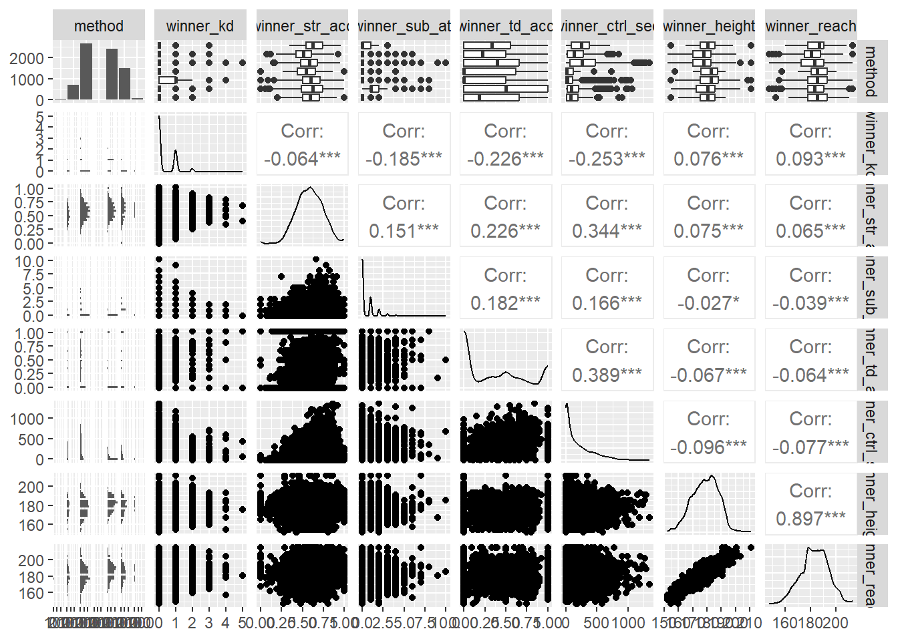
Code
## 2. Train/test split (same seed for comparability)
set.seed(213)
n_men <- nrow(men_winner_stats)
train_idx_men <- sample(1:n_men, size = 0.8 * n_men)
train_men <- men_winner_stats[train_idx_men, ]
test_men <- men_winner_stats[-train_idx_men, ]
cat("Men - Training rows:", nrow(train_men), "\n")
## Men - Training rows: 5951
cat("Men - Testing rows:", nrow(test_men), "\n")
## Men - Testing rows: 1488
## M — MODEL
multi_model_men <- multinom(
method ~ winner_kd +
winner_str_acc +
winner_sub_att +
winner_td_acc +
winner_ctrl_sec +
winner_height +
winner_reach,
data = train_men
)
## # weights: 63 (48 variable)
## initial value 11091.687850
## iter 10 value 7802.080742
## iter 20 value 6500.315388
## iter 30 value 5812.675640
## iter 40 value 5552.226957
## iter 50 value 5522.094640
## iter 60 value 5519.859297
## iter 70 value 5519.756607
## final value 5519.754811
## converged
print(summary(multi_model_men))
## Call:
## multinom(formula = method ~ winner_kd + winner_str_acc + winner_sub_att +
## winner_td_acc + winner_ctrl_sec + winner_height + winner_reach,
## data = train_men)
##
## Coefficients:
## (Intercept) winner_kd winner_str_acc winner_sub_att
## Decision - Split 11.9259027 -0.57550450 -4.2315040 -0.3681001
## Decision - Unanimous 11.0940044 0.31323481 -3.7130109 -0.1299592
## DQ -0.5565765 -1.47826416 -0.8312199 0.1184727
## KO/TKO 1.5189475 1.83269529 2.8011993 -0.7924909
## Submission 5.3776496 -0.04151452 0.1349387 1.3846509
## TKO - Doctor's Stoppage 4.3854781 0.61144859 1.5668175 -0.8427312
## winner_td_acc winner_ctrl_sec winner_height
## Decision - Split 0.1926110 -0.0006225035 -0.002752281
## Decision - Unanimous 0.6289374 0.0016636293 0.009336466
## DQ 0.9883153 -0.0058225947 0.077286867
## KO/TKO 0.9778683 -0.0065802786 0.020795540
## Submission 1.5306409 -0.0069957298 0.017605809
## TKO - Doctor's Stoppage 0.8497547 -0.0030891465 -0.033462065
## winner_reach
## Decision - Split -0.034295218
## Decision - Unanimous -0.040544620
## DQ -0.070235466
## KO/TKO -0.016750200
## Submission -0.031934803
## TKO - Doctor's Stoppage 0.007664103
##
## Std. Errors:
## (Intercept) winner_kd winner_str_acc winner_sub_att
## Decision - Split 0.126692885 0.12762021 0.27734166 0.2239190
## Decision - Unanimous 0.491528798 0.08274134 0.19929015 0.2100884
## DQ 0.004058922 0.03559572 0.02809145 0.4209908
## KO/TKO 0.250674538 0.07909873 0.22779100 0.2211581
## Submission 0.106951273 0.10472096 0.22922943 0.2132005
## TKO - Doctor's Stoppage 0.005217409 0.20756090 0.02538591 0.3659162
## winner_td_acc winner_ctrl_sec winner_height
## Decision - Split 0.1915157 0.0007282785 0.03241923
## Decision - Unanimous 0.1594633 0.0006809868 0.03154756
## DQ 0.4909471 0.0020094514 0.05782793
## KO/TKO 0.1637804 0.0007298580 0.03175879
## Submission 0.1682738 0.0007457273 0.03206719
## TKO - Doctor's Stoppage 0.3378717 0.0010397530 0.04080604
## winner_reach
## Decision - Split 0.03139503
## Decision - Unanimous 0.03040381
## DQ 0.05642828
## KO/TKO 0.03072872
## Submission 0.03106221
## TKO - Doctor's Stoppage 0.03952539
##
## Residual Deviance: 11039.51
## AIC: 11135.51
## Coefficient inference
coef_mat_men <- summary(multi_model_men)$coefficients
se_mat_men <- summary(multi_model_men)$standard.errors
z_values_men <- coef_mat_men / se_mat_men
p_values_men <- 2 * (1 - pnorm(abs(z_values_men)))
levels(train_men$method)
## [1] "Decision - Majority" "Decision - Split"
## [3] "Decision - Unanimous" "DQ"
## [5] "KO/TKO" "Submission"
## [7] "TKO - Doctor's Stoppage"
sig_idx_men <- which(p_values_men < 0.05, arr.ind = TRUE)
sig_effects_men <- data.frame(
method = rownames(p_values_men)[sig_idx_men[, "row"]],
predictor = colnames(p_values_men)[sig_idx_men[, "col"]],
p_value = p_values_men[sig_idx_men]
)
sig_effects_men <- sig_effects_men[
order(sig_effects_men$predictor, sig_effects_men$method),
]
sig_effects_men
## method predictor p_value
## 1 Decision - Split (Intercept) 0.000000e+00
## 2 Decision - Unanimous (Intercept) 0.000000e+00
## 3 DQ (Intercept) 0.000000e+00
## 4 KO/TKO (Intercept) 1.365957e-09
## 5 Submission (Intercept) 0.000000e+00
## 6 TKO - Doctor's Stoppage (Intercept) 0.000000e+00
## 25 Decision - Unanimous winner_ctrl_sec 1.456701e-02
## 26 DQ winner_ctrl_sec 3.760249e-03
## 27 KO/TKO winner_ctrl_sec 0.000000e+00
## 28 Submission winner_ctrl_sec 0.000000e+00
## 29 TKO - Doctor's Stoppage winner_ctrl_sec 2.967941e-03
## 7 Decision - Split winner_kd 6.497782e-06
## 8 Decision - Unanimous winner_kd 1.532698e-04
## 9 DQ winner_kd 0.000000e+00
## 10 KO/TKO winner_kd 0.000000e+00
## 11 TKO - Doctor's Stoppage winner_kd 3.220418e-03
## 12 Decision - Split winner_str_acc 0.000000e+00
## 13 Decision - Unanimous winner_str_acc 0.000000e+00
## 14 DQ winner_str_acc 0.000000e+00
## 15 KO/TKO winner_str_acc 0.000000e+00
## 16 TKO - Doctor's Stoppage winner_str_acc 0.000000e+00
## 17 KO/TKO winner_sub_att 3.391920e-04
## 18 Submission winner_sub_att 8.325718e-11
## 19 TKO - Doctor's Stoppage winner_sub_att 2.127481e-02
## 20 Decision - Unanimous winner_td_acc 8.010377e-05
## 21 DQ winner_td_acc 4.410631e-02
## 22 KO/TKO winner_td_acc 2.363758e-09
## 23 Submission winner_td_acc 0.000000e+00
## 24 TKO - Doctor's Stoppage winner_td_acc 1.190249e-02
cat("\nMen Z-values:\n")
##
## Men Z-values:
print(z_values_men)
## (Intercept) winner_kd winner_str_acc winner_sub_att
## Decision - Split 94.132379 -4.509509 -15.2573688 -1.6438986
## Decision - Unanimous 22.570406 3.785711 -18.6311808 -0.6185932
## DQ -137.124197 -41.529268 -29.5897874 0.2814140
## KO/TKO 6.059441 23.169718 12.2972344 -3.5833682
## Submission 50.281305 -0.396430 0.5886623 6.4945946
## TKO - Doctor's Stoppage 840.547060 2.945876 61.7199557 -2.3030716
## winner_td_acc winner_ctrl_sec winner_height
## Decision - Split 1.005719 -0.8547603 -0.08489654
## Decision - Unanimous 3.944089 2.4429684 0.29594891
## DQ 2.013079 -2.8976041 1.33649730
## KO/TKO 5.970605 -9.0158337 0.65479640
## Submission 9.096133 -9.3810829 0.54902868
## TKO - Doctor's Stoppage 2.515022 -2.9710389 -0.82002732
## winner_reach
## Decision - Split -1.0923774
## Decision - Unanimous -1.3335376
## DQ -1.2446856
## KO/TKO -0.5450992
## Submission -1.0280917
## TKO - Doctor's Stoppage 0.1939033
cat("\nMen P-values:\n")
##
## Men P-values:
print(p_values_men)
## (Intercept) winner_kd winner_str_acc winner_sub_att
## Decision - Split 0.000000e+00 6.497782e-06 0.0000000 1.001972e-01
## Decision - Unanimous 0.000000e+00 1.532698e-04 0.0000000 5.361844e-01
## DQ 0.000000e+00 0.000000e+00 0.0000000 7.783929e-01
## KO/TKO 1.365957e-09 0.000000e+00 0.0000000 3.391920e-04
## Submission 0.000000e+00 6.917879e-01 0.5560878 8.325718e-11
## TKO - Doctor's Stoppage 0.000000e+00 3.220418e-03 0.0000000 2.127481e-02
## winner_td_acc winner_ctrl_sec winner_height
## Decision - Split 3.145507e-01 0.392683875 0.9323436
## Decision - Unanimous 8.010377e-05 0.014567012 0.7672691
## DQ 4.410631e-02 0.003760249 0.1813868
## KO/TKO 2.363758e-09 0.000000000 0.5125989
## Submission 0.000000e+00 0.000000000 0.5829858
## TKO - Doctor's Stoppage 1.190249e-02 0.002967941 0.4122005
## winner_reach
## Decision - Split 0.2746673
## Decision - Unanimous 0.1823555
## DQ 0.2132473
## KO/TKO 0.5856853
## Submission 0.3039067
## TKO - Doctor's Stoppage 0.8462516
## A — ASSESS
pred_test_men <- predict(multi_model_men, newdata = test_men, type = "class")
pred_test_men <- factor(pred_test_men, levels = levels(test_men$method))
conf_mat_men <- table(Predicted = pred_test_men, Actual = test_men$method)
cat("\nMen Confusion matrix (Test set):\n")
##
## Men Confusion matrix (Test set):
print(conf_mat_men)
## Actual
## Predicted Decision - Majority Decision - Split
## Decision - Majority 0 0
## Decision - Split 0 0
## Decision - Unanimous 5 102
## DQ 0 0
## KO/TKO 3 24
## Submission 4 21
## TKO - Doctor's Stoppage 0 0
## Actual
## Predicted Decision - Unanimous DQ KO/TKO Submission
## Decision - Majority 0 0 0 0
## Decision - Split 0 0 0 0
## Decision - Unanimous 408 1 76 55
## DQ 0 0 0 0
## KO/TKO 82 1 343 19
## Submission 49 0 17 192
## TKO - Doctor's Stoppage 0 0 0 0
## Actual
## Predicted TKO - Doctor's Stoppage
## Decision - Majority 0
## Decision - Split 0
## Decision - Unanimous 8
## DQ 0
## KO/TKO 6
## Submission 0
## TKO - Doctor's Stoppage 0
accuracy_men <- mean(pred_test_men == test_men$method, na.rm = TRUE)
cat("\nMen Accuracy (direct):", accuracy_men, "\n")
##
## Men Accuracy (direct): 0.6659605
accuracy_from_confmat_men <- sum(diag(conf_mat_men)) / sum(conf_mat_men)
cat("Men Accuracy (confusion matrix):", accuracy_from_confmat_men, "\n")
## Men Accuracy (confusion matrix): 0.6659605
cm_men <- confusionMatrix(
data = pred_test_men,
reference = test_men$method
)
cat("\n=== caret::confusionMatrix Summary (Men) ===\n")
##
## === caret::confusionMatrix Summary (Men) ===
print(cm_men)
## Confusion Matrix and Statistics
##
## Reference
## Prediction Decision - Majority Decision - Split
## Decision - Majority 0 0
## Decision - Split 0 0
## Decision - Unanimous 5 102
## DQ 0 0
## KO/TKO 3 24
## Submission 4 21
## TKO - Doctor's Stoppage 0 0
## Reference
## Prediction Decision - Unanimous DQ KO/TKO Submission
## Decision - Majority 0 0 0 0
## Decision - Split 0 0 0 0
## Decision - Unanimous 408 1 76 55
## DQ 0 0 0 0
## KO/TKO 82 1 343 19
## Submission 49 0 17 192
## TKO - Doctor's Stoppage 0 0 0 0
## Reference
## Prediction TKO - Doctor's Stoppage
## Decision - Majority 0
## Decision - Split 0
## Decision - Unanimous 8
## DQ 0
## KO/TKO 6
## Submission 0
## TKO - Doctor's Stoppage 0
##
## Overall Statistics
##
## Accuracy : 0.666
## 95% CI : (0.6407, 0.6905)
## No Information Rate : 0.3806
## P-Value [Acc > NIR] : < 2.2e-16
##
## Kappa : 0.5105
##
## Mcnemar's Test P-Value : NA
##
## Statistics by Class:
##
## Class: Decision - Majority Class: Decision - Split
## Sensitivity 0.000000 0.0000
## Specificity 1.000000 1.0000
## Pos Pred Value NaN NaN
## Neg Pred Value 0.991525 0.8962
## Prevalence 0.008475 0.1038
## Detection Rate 0.000000 0.0000
## Detection Prevalence 0.000000 0.0000
## Balanced Accuracy 0.500000 0.5000
## Class: Decision - Unanimous Class: DQ Class: KO/TKO
## Sensitivity 0.7570 0.000000 0.7867
## Specificity 0.7184 1.000000 0.8622
## Pos Pred Value 0.6229 NaN 0.7176
## Neg Pred Value 0.8279 0.998588 0.9009
## Prevalence 0.3806 0.001412 0.3079
## Detection Rate 0.2881 0.000000 0.2422
## Detection Prevalence 0.4626 0.000000 0.3376
## Balanced Accuracy 0.7377 0.500000 0.8245
## Class: Submission Class: TKO - Doctor's Stoppage
## Sensitivity 0.7218 0.000000
## Specificity 0.9209 1.000000
## Pos Pred Value 0.6784 NaN
## Neg Pred Value 0.9347 0.990113
## Prevalence 0.1879 0.009887
## Detection Rate 0.1356 0.000000
## Detection Prevalence 0.1999 0.000000
## Balanced Accuracy 0.8213 0.500000
cm_men$overall
## Accuracy Kappa AccuracyLower AccuracyUpper AccuracyNull
## 6.659605e-01 5.105198e-01 6.407161e-01 6.905142e-01 3.806497e-01
## AccuracyPValue McnemarPValue
## 1.838332e-104 NaN
cm_byclass_df_men <- as.data.frame(cm_men$byClass)
cm_byclass_df_men
## Sensitivity Specificity Pos Pred Value
## Class: Decision - Majority 0.0000000 1.0000000 NaN
## Class: Decision - Split 0.0000000 1.0000000 NaN
## Class: Decision - Unanimous 0.7569573 0.7183580 0.6229008
## Class: DQ 0.0000000 1.0000000 NaN
## Class: KO/TKO 0.7866972 0.8622449 0.7175732
## Class: Submission 0.7218045 0.9208696 0.6784452
## Class: TKO - Doctor's Stoppage 0.0000000 1.0000000 NaN
## Neg Pred Value Precision Recall F1
## Class: Decision - Majority 0.9915254 NA 0.0000000 NA
## Class: Decision - Split 0.8961864 NA 0.0000000 NA
## Class: Decision - Unanimous 0.8278581 0.6229008 0.7569573 0.6834171
## Class: DQ 0.9985876 NA 0.0000000 NA
## Class: KO/TKO 0.9008529 0.7175732 0.7866972 0.7505470
## Class: Submission 0.9346867 0.6784452 0.7218045 0.6994536
## Class: TKO - Doctor's Stoppage 0.9901130 NA 0.0000000 NA
## Prevalence Detection Rate Detection Prevalence
## Class: Decision - Majority 0.008474576 0.0000000 0.0000000
## Class: Decision - Split 0.103813559 0.0000000 0.0000000
## Class: Decision - Unanimous 0.380649718 0.2881356 0.4625706
## Class: DQ 0.001412429 0.0000000 0.0000000
## Class: KO/TKO 0.307909605 0.2422316 0.3375706
## Class: Submission 0.187853107 0.1355932 0.1998588
## Class: TKO - Doctor's Stoppage 0.009887006 0.0000000 0.0000000
## Balanced Accuracy
## Class: Decision - Majority 0.5000000
## Class: Decision - Split 0.5000000
## Class: Decision - Unanimous 0.7376577
## Class: DQ 0.5000000
## Class: KO/TKO 0.8244711
## Class: Submission 0.8213370
## Class: TKO - Doctor's Stoppage 0.5000000
## McFadden R2
null_model_men <- multinom(method ~ 1, data = train_men, trace = FALSE)
LL_full_men <- as.numeric(logLik(multi_model_men))
LL_null_men <- as.numeric(logLik(null_model_men))
McFadden_R2_men <- 1 - (LL_full_men / LL_null_men)
cat("\nMen McFadden R2:", McFadden_R2_men, "\n")
##
## Men McFadden R2: 0.332038
## Predicted vs Actual plot
comparison_df_men <- data.frame(
actual = test_men$method,
predicted = pred_test_men
)
ggplot(comparison_df_men, aes(x = actual, fill = predicted)) +
geom_bar(position = "dodge") +
theme_minimal() +
labs(
title = "Predicted vs Actual Methods (Men Test Set)",
x = "Actual Method",
y = "Count",
fill = "Predicted"
)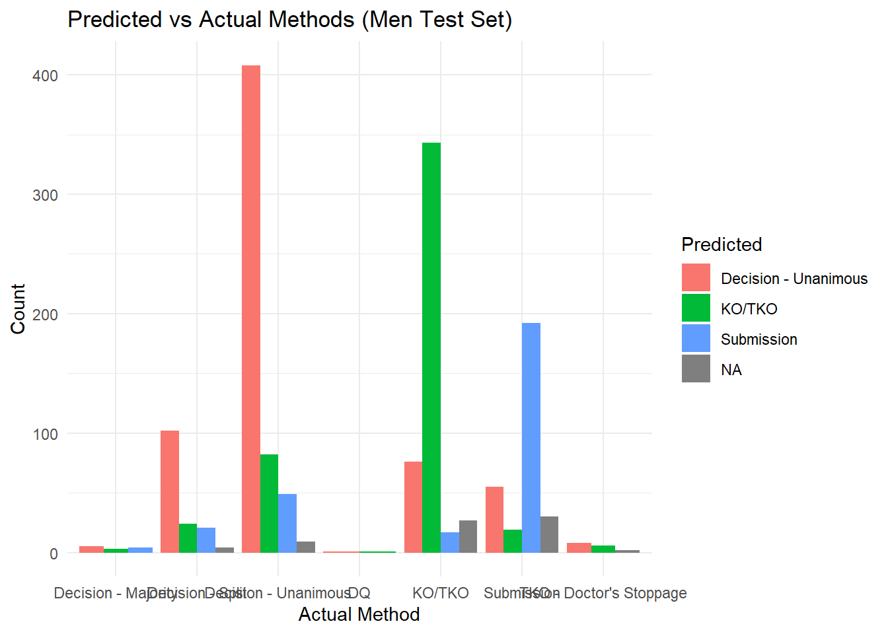
Code
save_last_plot("men_predicted_vs_actual")
## Saved: figures/Fig05_men_predicted_vs_actual.png
## Coefficient plot
coef_df_men <- tidy(multi_model_men) %>%
filter(term != "(Intercept)") %>%
mutate(
term_pretty = recode(
term,
winner_kd = "Knockdowns",
winner_str_acc = "Striking Accuracy",
winner_sub_att = "Submission Attempts",
winner_td_acc = "Takedown Accuracy",
winner_ctrl_sec = "Control Time (sec)",
winner_height = "Height",
winner_reach = "Reach",
.default = term
)
)
ggplot(coef_df_men, aes(x = term_pretty, y = estimate, fill = y.level)) +
geom_col(position = "dodge") +
coord_flip() +
labs(
title = "Coefficient Estimates by Win Condition (Men)",
x = "Predictor",
y = "Log-odds Coefficient",
fill = "Win Condition"
) +
theme_minimal()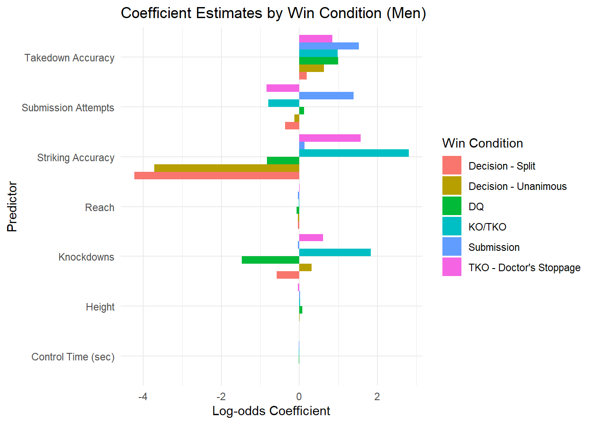
Code
save_last_plot("men_coefficients")
## Saved: figures/Fig06_men_coefficients.png
## Coefficient heatmap
heat_df_long_men <- coef_df_men %>%
select(y.level, term_pretty, estimate)
heat_df_wide_men <- dcast(
heat_df_long_men,
term_pretty ~ y.level,
value.var = "estimate"
)
heat_df_melt_men <- melt(
heat_df_wide_men,
id.vars = "term_pretty",
variable.name = "win_condition",
value.name = "coef"
)
ggplot(heat_df_melt_men, aes(x = win_condition, y = term_pretty, fill = coef)) +
geom_tile() +
scale_fill_gradient2(
low = "blue",
mid = "white",
high = "red",
midpoint = 0
) +
labs(
title = "Predictor Importance Heatmap (Men)",
x = "Win Condition",
y = "Predictor",
fill = "Coef"
) +
theme_minimal() +
theme(axis.text.x = element_text(angle = 45, hjust = 1))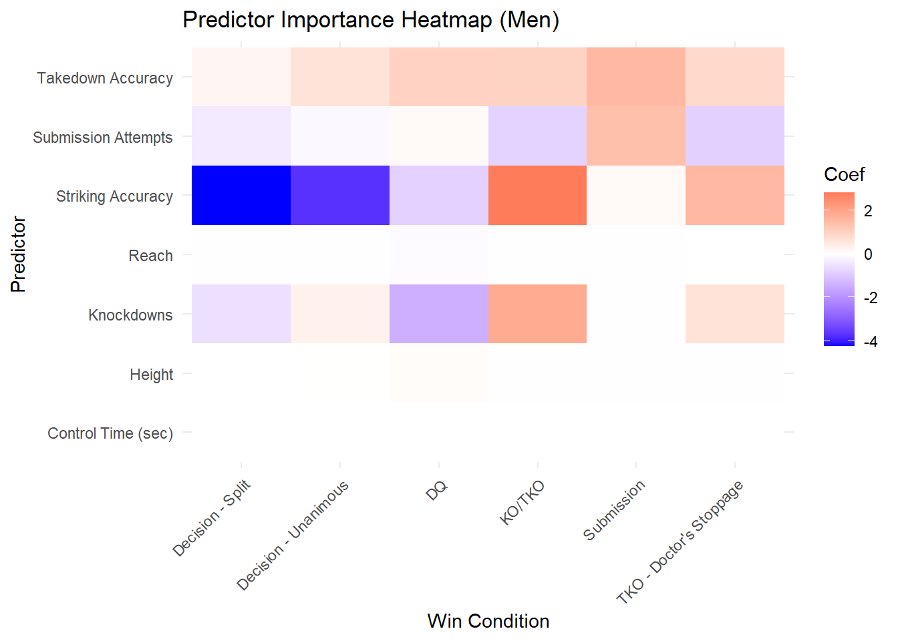
Code
## ==========================================================
## Unified Comparison Plots
## ==========================================================
## 1. Combined Coefficient Plot
coef_combined <- bind_rows(
mutate(coef_df, gender = "Women"),
mutate(coef_df_men, gender = "Men")
)
ggplot(coef_combined, aes(x = term_pretty, y = estimate, fill = y.level)) +
geom_col(position = "dodge") +
facet_wrap(~ gender) +
coord_flip() +
labs(
title = "Coefficient Estimates: Men vs Women",
x = "Predictor",
y = "Log-odds Coefficient",
fill = "Win Condition"
) +
theme_minimal()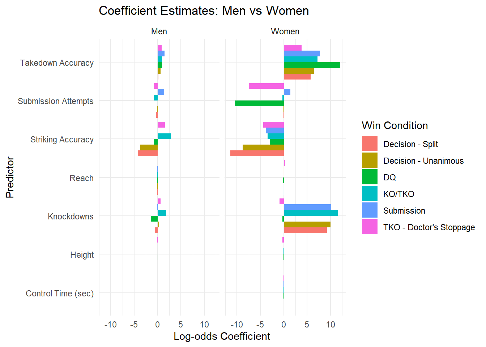
Code
save_last_plot("combined_coefficients")
## Saved: figures/Fig07_combined_coefficients.png
## 2. Combined Heatmap
heat_combined <- bind_rows(
mutate(heat_df_melt, gender = "Women"),
mutate(heat_df_melt_men, gender = "Men")
)
ggplot(heat_combined, aes(x = win_condition, y = term_pretty, fill = coef)) +
geom_tile() +
facet_wrap(~ gender) +
scale_fill_gradient2(low = "blue", mid = "white", high = "red", midpoint = 0) +
labs(
title = "Predictor Importance Heatmap: Men vs Women",
x = "Win Condition",
y = "Predictor",
fill = "Coef"
) +
theme_minimal() +
theme(axis.text.x = element_text(angle = 45, hjust = 1))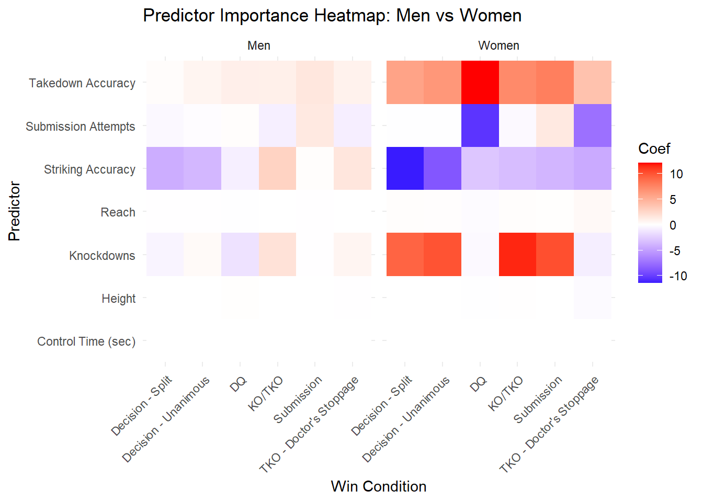
Code
save_last_plot("combined_heatmap")
## Saved: figures/Fig08_combined_heatmap.png